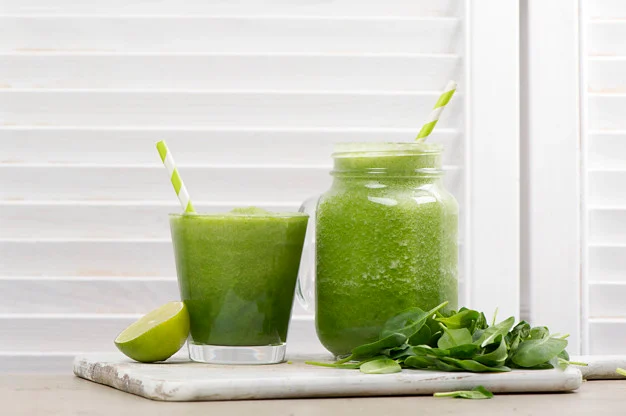
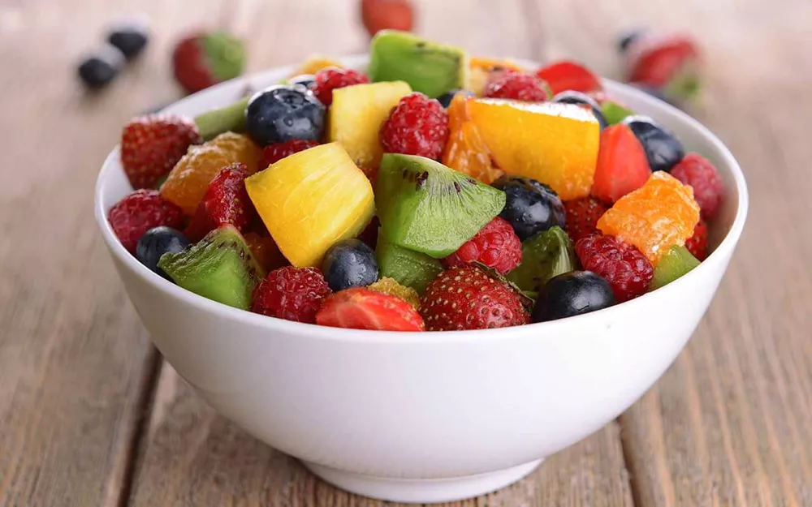
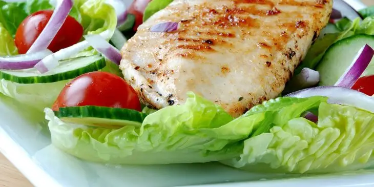

LIVRO DE RECEITAS DA ALESSANDRA
- Café da Manhã
- Lanche da Manhã
- Almoço Saudável
RECEITA PARA CAFÉ DA MANHÃ: SUCO DETOX

Lista de Ingredientes:
- 1 folha de couve;
- 1 maça verde;
- 1 copo de água;
- gengibre a gosto;
Modo de Preparo:
- Lave os ingredientes;
- Bata os ingredientes no liquidificador;
- Acrescente gelo no final.
Dica: Consumir logo após o preparo.
RECEITA PARA LANCHE DA MANHÃ: SALADA DE FRUTAS

Lista de Ingredientes:
- 1 laranja;
- 1 maça;
- 1 banana;
- 1 fatia de abacaxi;
- 1 fatia de mamão;
Modo de Preparo:
- Lave os ingredientes;
- Pique todos os ingredientes;
- Coloque os ingredientes numa tigela;
Dica: Você pode acrescentar um pouco de mel e aveia.
RECEITA PARA ALMOÇO SAUDÁVEL: SALADA E FRANGO GRELHADO

Lista de Ingredientes:
- 2 folhas de alface;
- 2 folhas de rúcula;
- 1 tomate;
- 1 cenoura;
- 1 filé de frango;
Modo de Preparo da Salada:
- Lave bem os ingredientes;
- Pique o tomate e a cenoura;
- Coloque as folhas, o tomate e a cenura numa tigela e tempere do seu gosto.
Modo de Preparo do Frango:
- Tempere o filé com sal, pimenta e alho;
- Numa chapa acrescente azeite e grelhe o frango.
Dica: Assim que o frango estiver grelhado, coloque a salada num prato e o filé de frango ao lado da
salada.
Bom Apetite!